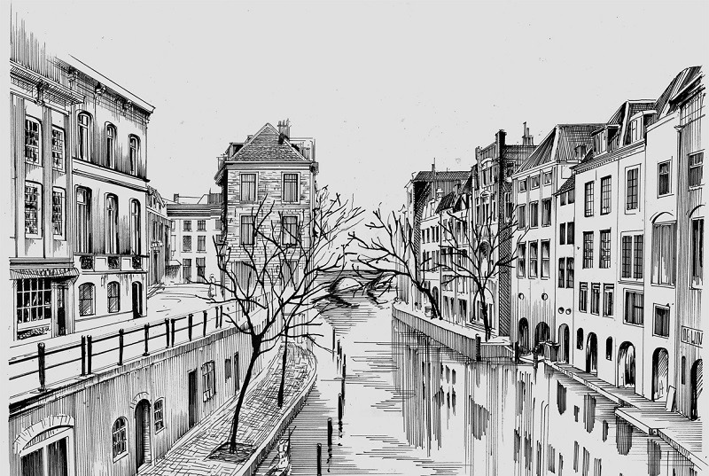
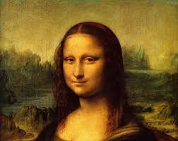
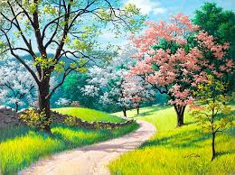
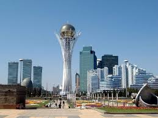

2. Визуалды өнер
Бейнелеу өнері (ағылш. Visual arts) — дүниені көзбен көріп, түйсіну негізінде
бейнелейтін пластикалық өнердің бір саласы.
Бейнелеу өнеріне негізінен кескіндеме мүсін, графика жатады. Бейнелеу өнерінің белгілері архитектура, безендіру және қолданбалы өнерде көрініс табуы мүмкін. Сондықтан шартты түрде оларды да Бейнелеу өнері қатарына жатқызады. Сондай-ақ, театр, кино, теледидардағы безендіруді, көркем дизайнды да Бейнелеу өнері ретінде таниды. Бұл өнердің де негізінде адам, табиғат және заттық әлемді тұтастықта, бірлікте қарастыру жатыр. Бейнелеу өнері дүниені байқау, бақылау, көру нәтижесінде оның көркем бейнесін жасайды. Әр ғасыр, дәуір, кезеңде пайда болған Бейнелеу өнерінің туындылары өзіндік бейнелеу жүйесі мен көркемдік үндесудің түрлі типтерін құрайды. Бейнелеу өнерінің әр жанры қоршаған әлемнің бейнесін түрліше береді: кескіндеме түрлі түрлі-түсті бояуды, графика түрлі сызықтардың қиылысуын, көлеңке мен жарықтың астасуын, мүсін пластикалық үш өлшемді (биіктік, ендік және аумақтық) пайдаланады. Бейнелеу өнерінің барлық жанрындағы шығармалары мазмұнына қарай монументальді-сәндік және қондырмалы болып екіге бөлінеді. Қондырмалы шығармалар негізінен музейлер, галереялар немесе үй интерьерлерін безендіріп, сол жерлерде орналасады. Монументальді кескіндеме ғимараттардың ішкі қабырғаларында, интерьерде және экстерьерде жазылады. Монументальді мүсін архит. кешендерде, қала көшелері мен алаңдарда, мекеме ғимараттарының қасбеті мен интерьерлерінде орналасады. Шығыс және батыс Бейнелеу өнеріне тарихи даму процесі барысында қалыптасқан портрет, пейзаж, натюрморт сияқты жанрлар ортақ.

Кескіндеме Мүсіндеме
 
Графика Портрет
 
Пейзаж Сәулет өнері